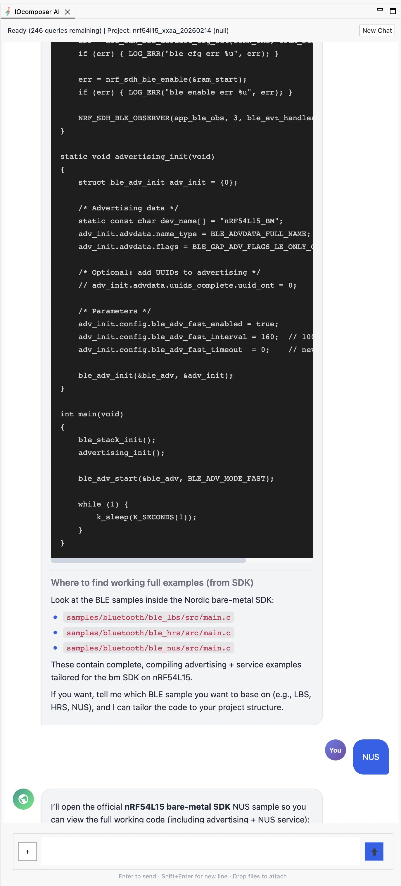
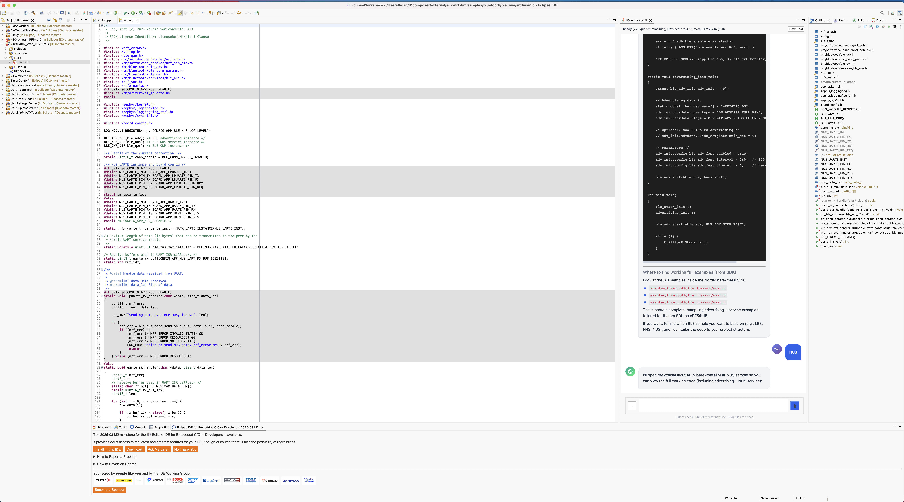
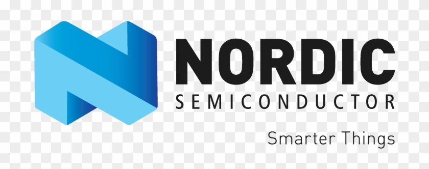

Start like Arduino, grow like a pro — without switching tools.
AI-Powered IDE for Embedded Development
A complete IDE — not a plugin. One install gives you editor, GCC toolchains, OpenOCD, vendor SDKs, and AI assistant.
Bare-metal firmware development with AI-powered code generation. Direct hardware access. Develop on a DevKit, move to any custom board in seconds — change a few pin assignments in a C header #define and recompile. No board files, no scripts, no complete rebuild.
#define UART_TX_PIN 6
#define UART_RX_PIN 8
#define SPI_SCK_PIN 25
#define SPI_MOSI_PIN 24
#define SPI_MISO_PIN 23
#define LED1_PIN 13
IOcomposer supports Nordic nRF52832, nRF52840, and nRF54L15 with SoftDevice BLE today, with STM32, NXP, and RISC-V targets in progress. The AI indexes your locally installed vendor SDK and reads your source code to generate firmware that compiles against your real headers. All AI features are unlocked free during preview — no credit card required.
Product Demos

AI detects a subtle SPI configuration error and suggests the fix
{kind=link}

AI prompt opens Nordic nRF54L15 baremetal code sample file
{kind=link}

AI shows Nordic nRF54L15 baremetal code sample
See It In Action
Creating a BLE Peripheral project with the IOcomposer wizard
AI-assisted build fix: resolve errors and regenerate clean project
One-click: flash + launch debugger from the chat panel
One script full install in 10 min.
Features
🤖 AI Assistant
AI grounded on your locally installed vendor SDK — and your own code libraries. Add your proprietary drivers, middleware, or internal frameworks to the knowledge base, and the AI generates code that fits your codebase, not just the vendor's. Creates projects, adds peripherals, generates BLE services, fixes build errors, and opens results in the editor.
🔒 Privacy-First
Your source code and project files stay on your machine — nothing is uploaded or stored on our servers. The AI builds a local index of your SDK and project; only the minimal relevant snippets needed to answer your prompt are sent, and nothing is retained.
🔧 Professional Tools
JTAG/SWD debug via OpenOCD with J-Link, CMSIS-DAP, or ST-Link probes. Breakpoints, register and memory inspection, variable watches, and flash programming — professional embedded workflow without juggling separate tools.
🎯 Multi-Vendor MCU Support
Nordic, ST, NXP, Renesas, and Microchip. No Device Tree. No BSP. No board files. Target the MCU directly — one configuration runs on every board variant, including your custom PCB. One IDE across vendors.

📶 Nordic BLE Ready
SoftDevice S132/S140 for nRF52, S145 for nRF54L15. BLE peripheral, central, and mesh roles with native stack integration and automatic memory layout management.
⚡ Quick Start
From clean machine to full debug with breakpoint at main() in ~15 minutes. One command installs the IDE, GCC ARM & RISC-V toolchains, OpenOCD, vendor SDKs, and AI plugin — all pre-configured. macOS, Linux, and Windows.
* IOcomposer AI is grounded on your installed vendor SDKs and purpose-built for embedded firmware — not a general-purpose chatbot.
Install
One command. IDE, toolchains, debug tools, and vendor SDKs — ready in ~15 minutes.
Prompt
Tell the AI what you need — "create a BLE peripheral for nRF54L15" — and get buildable code from your actual SDK.
Flash & Debug
Build, flash to hardware, and debug with JTAG/SWD breakpoints — all from the same window.
Install Now — Free Preview
All Advanced AI features unlocked. No credit card.
One command sets up everything — IDE, toolchains, debug tools, vendor SDKs, and AI plugin. ~15 minutes.
curl -fsSL https://iocomposer.io/install_ioc_macos.sh -o /tmp/install_ioc_macos.sh && bash /tmp/install_ioc_macos.sh
curl -fsSL https://iocomposer.io/install_ioc_linux.sh -o /tmp/install_ioc_linux.sh && bash /tmp/install_ioc_linux.sh
powershell -NoProfile -ExecutionPolicy Bypass -Command "irm https://iocomposer.io/install_ioc_windows.ps1 | iex"
By installing IOcomposer, you agree to the Terms of Service and Privacy Policy.
The installer may download third-party SDKs (e.g., Nordic) subject to their own license terms.
How It Works
IOcomposer is a complete bare-metal firmware development environment. It combines a professional code editor with managed builds, GCC ARM (arm-none-eabi-gcc) and GCC RISC-V toolchains for compilation, and OpenOCD for JTAG/SWD flashing and debugging through standard probes like J-Link, CMSIS-DAP, and ST-Link. A built-in hardware abstraction layer provides a consistent peripheral API (UART, SPI, I2C, timers, PWM, GPIO, interrupts) across ARM Cortex-M and RISC-V chips from multiple vendors.
For Nordic BLE development, IOcomposer integrates SoftDevice stacks directly — S132 and S140 for nRF52, S145 for nRF54L15. You configure your MCU and peripherals through a project wizard or AI prompts, and the build system handles linker scripts, memory layouts, and SoftDevice placement automatically. The bare-metal approach means you write against hardware registers and a thin HAL with no RTOS overhead — ideal for resource-constrained applications, low-latency firmware, and custom board designs.
The AI assistant indexes your locally installed vendor SDK and reads your project's header files and configuration before generating code. You can also add your own code libraries — proprietary drivers, internal frameworks, shared middleware — to the knowledge base, so the AI generates code that fits your codebase, not just the vendor's. It can create new projects, add peripheral drivers, generate BLE service implementations, diagnose build errors, and open results directly in the editor. The workflow is prompt → generate → build → flash → debug, from a single IDE.
Supported Hardware
Nordic Semiconductor SUPPORTED NOW
nRF52832, nRF52840, and nRF54L15. BLE connectivity via SoftDevice S132/S140 (nRF52) and S145 (nRF54L15). Uses Nordic's bare-metal SDK (sdk-nrf-bm) for direct hardware access with minimal abstraction.
Multi-vendor MCU support IN PROGRESS / PLANNED
STM32 (ST), LPC/i.MX RT (NXP), RA (Renesas), SAM/PIC32 (Microchip). Nordic is fully supported today; other vendors are at varying stages of integration.
Architectures: ARM Cortex-M (M0, M0+, M4, M33) and RISC-V. The ISA-agnostic design means the same application code compiles for both architectures when targeting equivalent peripherals. Custom boards work without board support packages — IOcomposer targets the MCU directly, so any PCB with a supported chip is ready to develop on.
Why Not Just Use VS Code + Copilot?
General-purpose AI coding tools like Copilot, Cursor, or ChatGPT are trained on web and application code — not vendor SDKs, register maps, or SoftDevice APIs. When you ask them to write firmware for an nRF52840, they'll generate something that looks plausible but references structs that don't exist, calls functions with wrong signatures, or ignores memory constraints entirely. You spend more time fixing the AI's output than you saved.
IOcomposer's AI is different because it indexes your installed vendor SDK and reads your actual, local header files before generating a single line. It knows what headers are in your project, what structs are defined, what functions are available. The result is code that compiles against your real SDK — not an approximation.
Then there's everything after code generation. VS Code with Cortex-Debug requires manual launch.json configuration, OpenOCD scripts, SVD files for register views, and separate terminal workflows for flashing. IOcomposer handles build, flash, and JTAG/SWD debug as a single integrated workflow — click build, click flash, set a breakpoint, step through your code. No configuration files to maintain.
Enable AI Chat
A free account unlocks AI features. During the free preview, all Advanced capabilities are included — no payment required.
- Install IOcomposer (above), then launch the IDE.
- Open Preferences → IOcomposer → Account.
- Click Create free account (or Sign in) to enable AI Chat.
Tip: If AI Chat is disabled, the Chat panel will show a sign-in prompt and a shortcut to the Preferences page.
Simple Pricing
Free preview: Advanced features are unlocked for all accounts right now. Pricing below reflects future launch plans and may change.
Free
Test the waters
- 20 AI queries/month
- Fast models (Mini/Haiku)
- Full IDE features
- Debug & flash
Advanced
Daily development
- 250 AI queries/month*
- Adaptive Intelligence (Router)
- File uploads (Max 5MB)
- Standard context memory
- Priority support
*Complex queries (e.g. large file analysis) may consume >1 query credit.
Pro
Heavy research & code
- 1,000 AI queries/month*
- Max Intelligence
- Large file uploads (Max 50MB)
- Extended context memory
- Priority support
*Complex queries may consume >1 query credit.
Who Is This For
Makers outgrowing Arduino. You've hit the limits of the Arduino IDE — no real debugger, no register views, no vendor SDK access. IOcomposer gives you professional JTAG/SWD debugging, direct hardware control, and AI-assisted code generation, without the learning curve of setting up a full vendor toolchain from scratch.
Engineers who need fast time to market. You're shipping firmware across board revisions and product variants. With IOcomposer, porting to a new board is a C header change — update your pin #defines and recompile. No Device Tree rewrites, no new board support packages, no full rebuild. Spend time on your application, not your toolchain.
Nordic developers who want bare-metal BLE. You're building a BLE peripheral, sensor node, or custom board with nRF52840 or nRF54L15 and don't need a full RTOS. IOcomposer integrates SoftDevice stacks natively with direct hardware access. Ask the AI to create a BLE peripheral project — get a fully functional, SoftDevice-aware firmware you can build and flash in under two minutes.
Teams working on proprietary firmware. Your source code stays on your machine. The AI reads local files only — nothing is uploaded. For teams with IP-sensitive projects, this means AI-assisted development without cloud exposure.
Developers targeting custom hardware. IOcomposer targets the MCU directly — no board definitions, no BSP files, no Device Tree overlays. If your custom PCB uses a supported chip, you can build and flash firmware immediately.
FAQ
Quick answers for evaluation and onboarding.
What is IOcomposer?
IOcomposer is a bare-metal embedded IDE with AI-powered code generation. It provides a complete firmware development environment — from project creation through compile, flash, and JTAG/SWD debug — for ARM Cortex-M and RISC-V microcontrollers from Nordic, ST, NXP, Renesas, and Microchip.
Which MCUs and architectures does IOcomposer support?
IOcomposer supports ARM Cortex-M and RISC-V architectures. Specific MCU families include Nordic nRF52832, nRF52840, and nRF54L15; STM32 (planned); NXP (planned); Renesas; and Microchip. Nordic is the primary supported vendor today, with BLE SoftDevice integration for nRF52 (S132/S140) and nRF54 (S145).
Does IOcomposer require Zephyr or nRF Connect SDK?
No. IOcomposer takes a bare-metal approach using a lightweight hardware abstraction layer and Nordic's baremetal SDK (sdk-nrf-bm). You write directly against hardware registers and a thin HAL, with SoftDevice BLE stacks integrated natively. nRF Connect SDK provides a full RTOS environment with Zephyr, Device Tree, Kconfig, and CMake — powerful for complex, multi-threaded applications. IOcomposer targets a different use case: projects where direct hardware control, minimal overhead, and fast board porting matter more than RTOS features. One MCU configuration works on any board with that chip, and the AI reads your local SDK files to generate code that compiles without modification.
Can I use IOcomposer with the nRF54L15?
Yes. IOcomposer supports the Nordic nRF54L15 with bare-metal development using the sdk-nrf-bm SDK and the S145 SoftDevice BLE stack. You can create BLE peripheral and central projects for nRF54L15 with direct hardware access and a managed build system.
How is IOcomposer different from Arduino IDE?
Arduino is designed for beginners with simplified APIs and no debug support. IOcomposer provides professional embedded tools — JTAG/SWD debugging with breakpoints, register and memory views, direct MCU register access, BLE SoftDevice integration, and AI-assisted code generation that reads your actual SDK headers. IOcomposer is built for makers and developers who have outgrown Arduino and need real hardware debugging and vendor SDK access.
Why not just use VS Code with Copilot or Cursor for embedded?
General-purpose AI tools like Copilot and Cursor are trained on web and application code, not vendor SDKs or MCU register maps. They generate firmware that looks plausible but references structs that don't exist or calls functions with wrong signatures. IOcomposer's AI reads your actual, locally installed SDK headers before generating code — so the output compiles against your real SDK. On top of that, IOcomposer integrates build, flash, and JTAG/SWD debug into a single workflow. With VS Code + Cortex-Debug, you're manually configuring launch.json, OpenOCD scripts, and SVD files yourself.
Does IOcomposer work on custom PCBs and custom boards?
Yes. IOcomposer targets the MCU directly rather than requiring board definitions or BSP files. If your custom board uses a supported MCU (such as nRF52840 or nRF54L15), you configure pin assignments in your firmware code and flash directly. No Device Tree overlay or board file is needed.
What toolchains and debug probes does IOcomposer use?
IOcomposer uses GCC ARM (arm-none-eabi-gcc) and GCC RISC-V toolchains for compilation, and OpenOCD for JTAG/SWD flashing and debugging. It supports standard debug probes including J-Link, CMSIS-DAP, and ST-Link. The entire toolchain is installed automatically by the one-command installer.
How does the AI assistant work?
The AI indexes your locally installed vendor SDK and reads your project's header files, framework sources, and configuration before generating code. You can also add your own code libraries to the knowledge base — proprietary drivers, internal frameworks, or shared middleware — so the AI works with your codebase, not just the vendor's. It can create projects, add peripherals (UART, SPI, I2C, BLE services), fix build errors, and open files directly in the editor.
Can I add my own code libraries to the AI knowledge base?
Yes. You can add your proprietary drivers, internal frameworks, shared middleware, or any code library to IOcomposer's AI knowledge base. The AI then generates code that uses your APIs, naming conventions, and patterns — not just the vendor SDK. This works the same way vendor SDKs are integrated: your library becomes part of what the AI knows when writing and reviewing code.
Do you upload my project files to your servers?
No. Your source code, project files, and entire codebase stay on your machine — IOcomposer does not upload or store them. The AI builds a local index of your SDK and project files; only the minimal relevant snippets required to answer your prompt are sent to the AI model. Nothing is stored server-side, and chat sessions are discarded when you exit.
What operating systems does IOcomposer run on?
IOcomposer runs on macOS, Linux, and Windows. A one-command installer sets up the IDE, ARM and RISC-V toolchains, OpenOCD, vendor SDKs, and the AI plugin — typically in about 10–15 minutes on a fresh machine.
Is IOcomposer free?
Yes — IOcomposer is in free preview right now. The IDE with full build, flash, and debug capabilities is free, and all Advanced AI features are unlocked for every account during the preview period. After launch, AI features will have a free tier (20 queries/month) and paid plans starting at $19.95/month.
How do I enable AI Chat?
Install the IDE, then open Preferences → IOcomposer → Account and create a free account (or sign in) to enable AI Chat. No payment is required for the free tier.
What is IOsonata?
IOsonata is an open-source, ISA-agnostic embedded firmware framework that provides a consistent API across ARM Cortex-M and RISC-V microcontrollers from multiple vendors. It reimplements core peripherals (UART, I2C, SPI, timers, PWM, GPIO, interrupts) with a unified interface while calling vendor HAL for less common peripherals. IOcomposer is the recommended IDE for IOsonata development.
Try it free — all Advanced AI features are unlocked during preview.
Install IOcomposer, create a free account in Preferences → IOcomposer → Account, and start building.